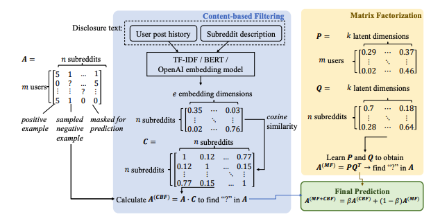
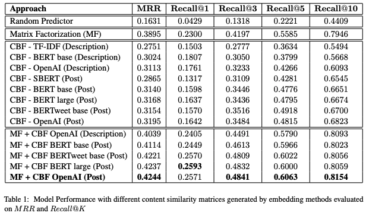
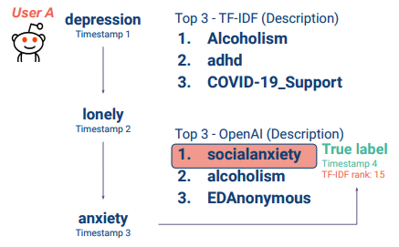
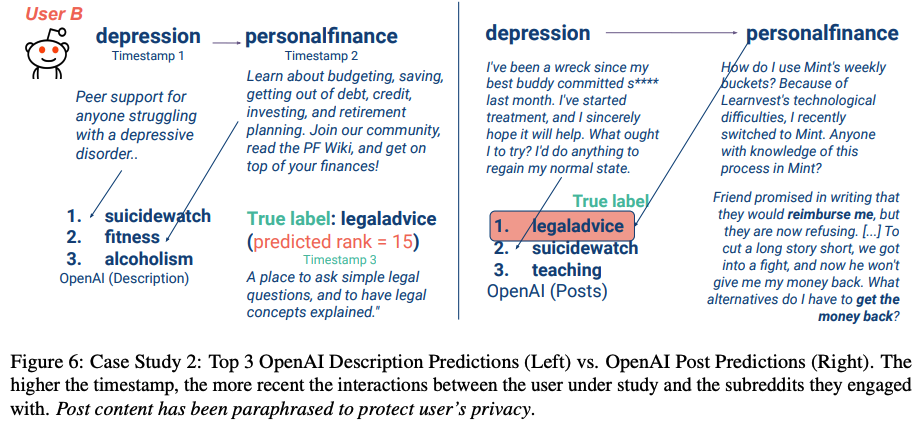
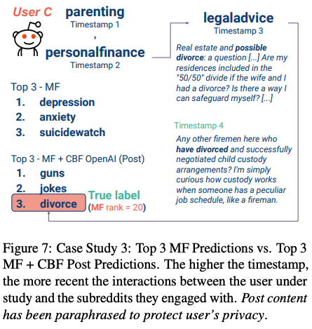

Research / CODI · ACL 2023
Our paper investigates the use of discourse embedding techniques to develop a community recommendation system that focuses on mental health support groups on social media. Social media platforms provide a means for users to anonymously connect with communities that cater to their specific interests. However, with the vast number of online communities available, users may face difficulties in identifying relevant groups to address their mental health concerns. To address this challenge, we explore the integration of discourse information from various subreddit communities using embedding techniques to develop an effective recommendation system. Our approach involves the use of content-based and collaborative filtering techniques to enhance the performance of the recommendation system. Our findings indicate that the proposed approach outperforms the use of each technique separately and provides interpretability in the recommendation process.
Online communities provide vital spaces for people to seek advice, share experiences, and find support—especially in sensitive areas like mental health. Platforms such as Reddit host thousands of communities, but new users often struggle to identify which groups are most relevant to their needs. Simply browsing conversations can be overwhelming, and the anonymous nature of these spaces makes it even harder to discover the right support group.
Our work addresses this challenge by developing a community recommendation system that leverages discourse embeddings—representations of the language and discussions that define each community. By combining content-based filtering (capturing semantic similarities between communities) with collaborative filtering (learning from user engagement patterns), our hybrid model recommends relevant support groups to individuals seeking help. This approach not only improves accuracy but also offers interpretability, helping users better understand why certain communities are suggested and ultimately making it easier for them to find meaningful mental health support.

Our experiments demonstrate that incorporating discourse embeddings into recommendation models leads to clear improvements over traditional baselines. By combining content-based filtering with matrix factorization, the hybrid model consistently provided more accurate and reliable recommendations for mental health communities.
We also found that using posts from communities to generate embeddings was generally more effective than relying only on community descriptions, since posts capture richer semantic information. Furthermore, deep learning–based embeddings outperformed simpler methods, enabling the model to better capture subtle relationships between communities.
Finally, case studies showed that the hybrid approach not only improved accuracy but also enhanced interpretability. Unlike black-box methods, our system could highlight the linguistic and engagement patterns that drove each recommendation, helping users better understand why certain communities were suggested.

We present three case studies that illustrate when and why our hybrid approach (CBF + MF) helps, how different discourse signals matter, and where collaborative filtering alone may struggle.
We compare traditional lexical features against modern semantic embeddings when representing subreddit descriptions. Semantic embeddings capture topical proximity between related communities better than bag-of-words features, leading to more relevant suggestions for users with similar posting histories.


We evaluate representing communities by their posts versus their short descriptions. Using posts generally yields richer signals (e.g., practical questions, coping strategies, co-occurring concerns), improving the ability to surface communities that match a user’s lived context.
Collaborative filtering can under-recommend niche communities with fewer interactions (cold-start) or over-favor popular ones. Injecting discourse similarity via CBF counteracts these effects, highlighting semantically relevant but underrepresented groups.

@inproceedings{dang-etal-2023-embedding,
title = Embedding Mental Health Discourse for Community Recommendation,
author = Dang, Hy and Nguyen, Bang and Ziems, Noah and Jiang, Meng,
editor = Strube, Michael and Braud, Chloe and Hardmeier, Christian and Li, Junyi Jessy and Loaiciga, Sharid and Zeldes, Amir,
booktitle = Proceedings of the 4th Workshop on Computational Approaches to Discourse (CODI 2023),
month = jul, year = 2023, address = Toronto, Canada,
ublisher = Association for Computational Linguistics,}
Project page adapted from Nerfies, under CC BY-SA 4.0.